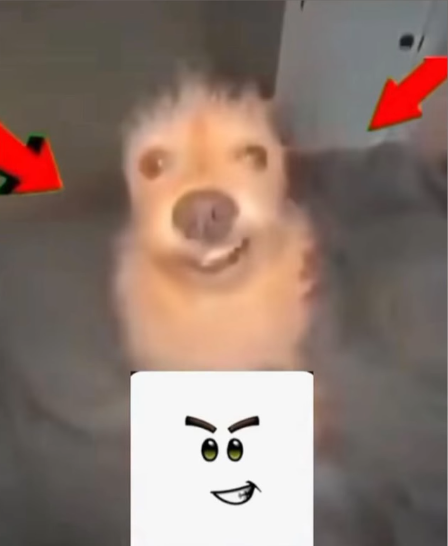

Hola, hola, me llamo sauul, tengo 19 añs, soy una persona alegre, amable y que ama conocer personas, me gusta mucho animar a los demas y poder hacer sentir feliz a la gente que me rodea, a veces soy un poco impulsivo pero bno quien no lo es. .
Soy una persna que le gusta prender csas nuevas, tener nuevas experiencias y no cerrrse a nada, para mi la pena no existe, me gusta bilar y AAAmo los videojuego, algunas veces dibujo, no soy tan bueno pero se hace el intento, me ggusta tocar el ukelele y esoy aprendiendo con otras cosillas ahi. .

Amo la musica, me gusta muchoo, si fuese por mi estaria 24/7 ecuchando musica, toooodo el dia a todo volumen... Me gusta de todo, no me cierro anada pero si hay alguos artistas que me gustan mas y escucho mas seguido, sobre todo en el kpop, algunos de ellos son: “Newjeans” , "just for me” de Pikphantress, , “I got you” de Twice, “No se decirte no” de Marco Mares, entre otros, la vdd son muuchos entonces si gustan saber mas entren a mi spotifyy
Me gusta mucho el deporte, desde pequeño me han inculcado a hacerlo y he estado en varios, como: taekwando, futbol, atletismo, volleyball... actualmente etoy retomando el ejercicio, haciendo desde gym hasta crossfit. mi meta es tener un cuerpo delgado y estetico, en el transcurso de mi vida he tenido algunos problemas alimenticios que he ido tratanto, asi que a veces me puedo o matar de hambre o comer hasta que no aguante, no suele haber punto medio pero es algo en lo que se está trabajando :D

Disfruto perderme en buenas historias, y una de mis series favoritas es Bones, porque combina misterio, ciencia y humanidad de una manera que me inspira y entretiene.
Soy rápida para actuar cuando me lo propongo, aunque sé que lo valioso no siempre está en la velocidad, sino en la claridad con la que comprendo y explico lo que me rodea. Me gusta reflexionar sobre la vida, lo humano, y cómo cambiamos y nos transformamos con el tiempo.
Este blog no busca ser perfecto, sino auténtico. Es mi espacio para compartir emociones, ideas y sueños. Tal vez alguien se identifique con lo que lea aquí, tal vez no, pero en estas palabras quedará un pedazo honesto de lo que soy.